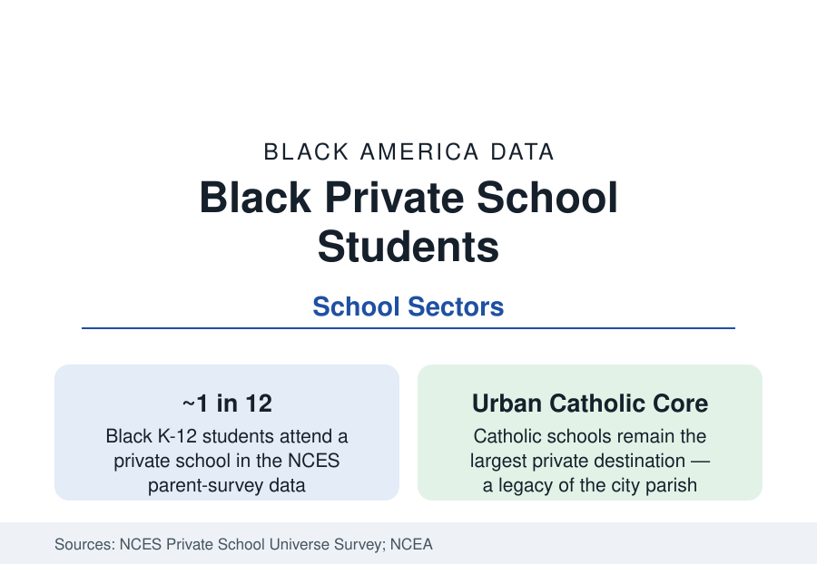

Black Education
Black Students in Catholic and Private Schools: The Parallel Tradition
About one in twelve Black students attends a private school — the Catholic schools of the old cities above all, with a modern independent and charter-adjacent layer. The NCES data.

Roughly one in twelve Black K-12 students attends a private school — a share below the national private enrollment rate, drawn from a distinctive institutional landscape: the urban Catholic schools that educated generations of Black city children (most of them not Catholic), the historically Black independent and boarding schools, the Black Christian academies of the post-1970 founding wave, and the voucher and scholarship programs' modern layer. This article reports the private sector's Black data.
The Catholic School Legacy
The Catholic system's Black history is one of American education's great institutional stories, and its data are kept by the National Catholic Educational Association: from the Oblate Sisters of Providence (Baltimore, 1828 — the first Black religious order in America, founded to educate Black girls) and St. Frances Academy forward, the urban dioceses built parish schools that became, by the mid-twentieth century, the private education of the Black working and middle classes in the Northern cities — schools whose discipline, order, and college rates the alumni literature celebrates and whose enrollment peaked with the parish system itself. The closure wave is the modern data: as parishes consolidated and costs rose, the dioceses closed hundreds of urban schools from the 1990s onward (New York, Chicago, Philadelphia, and Baltimore's archdioceses recording the deepest Black-enrollment losses), and each closure's displaced students appear in the charter and district data of the receiving systems — the Catholic school's role as the district's competitor and safety valve shrinking with its footprint. The surviving urban Catholic schools' data (waiting lists in the strongest, the Cristo Rey work-study network's growth — its schools serve predominantly Black and Latino low-income students with corporate-work funding) are the sector's live file.
The Black Independent and Christian School Layers
Two further layers carry the tradition. The historically Black independent schools — a small, storied set (boarding and day schools founded across the twentieth century, several by Black educators explicitly as alternatives) — enroll in the thousands and punch at alumni-outcome weight far above their size. The Black Christian academy movement, founded in waves from the 1970s (church schools attached to the Black church's institutional expansion), enrolls a substantial share of Black private students in the South and suburbs in the Private School Universe counts — the sector least visible in national data and most present in the community's own geography (the academy beside the megachurch is a standard feature of the suburban Black landscape in the city profiles). Homeschooling, profiled earlier, forms the sector's newest edge.
Choice Programs: The Modern Policy Layer
The public-money layer is the sector's current data engine: voucher programs (Milwaukee's pioneering 1990 program — the modern era's first, its enrollment heavily Black from the start; Cleveland, DC's federal program, Indiana's and Louisiana's statewide systems) and education savings accounts and tax-credit scholarships (the fastest-growing form in the current decade's state legislation) enroll Black students at shares reflecting their urban origins and income caps — in the oldest programs, Black students form the majority of participants in the program data. The outcome literature on the programs is the education research world's most contested file (achievement findings ranging from negative in Louisiana's rigorous early studies to modestly positive on attainment and college enrollment in the Milwaukee and DC longitudinal work), reported here as the field's genuinely mixed record — with the enrollment fact independent of it: given funded choice, Black families choose private and charter options at rates that reveal the demand the district data cannot.
The Cost and Aid Arithmetic
The sector's binding constraint is printed in the tuition tables: Catholic elementary tuition runs in the mid-single thousands, secondary in the low five figures, independent day schools multiples of that — against the median Black household income, a price requiring aid, parish subsidy, or sacrifice of the kind the ethnographic literature documents as a family strategy (grandparents' contributions, the second job for tuition — a data point the household surveys catch as education spending shares notably high in Black private-school families). The scholarship infrastructure (the Children's Scholarship Fund and its city partners, the diocesan funds, the tax-credit scholarship organizations) intermediates the gap for a fraction of the demand — the waiting-list and lottery data of the oversubscribed programs being the file's cleanest measure of unmet demand.
Reading the Private School Data
One in twelve is a minority taste with a majority significance: the Black private-school tradition — Oblate sisters to Cristo Rey, boarding schools to church academies — is the community's own verdict, rendered in tuition checks, on what it wants from a school. The sector's data describe an educational consumer as exacting as any in America, buying discipline, safety, and faith-inflected order at prices its income says it cannot afford, and affording them anyway.
More in Black Education
Black Educational Attainment: High School Parity, the College Gap
About 89 percent of Black adults hold a high school diploma and one in four holds a bachelor's degree or higher — the attainment ladder, the college completion gap, and the generational trend.
Historically Black Colleges and Universities: Enrollment and Degrees
More than 100 HBCUs enroll roughly 290,000 students and award about one in six Black bachelor's degrees — an outsized share from a small sector. The federal education data.
Black College Enrollment: 2.4 Million Students
About 2.4 million Black students are enrolled in American colleges — nearly two-thirds of them women. The NCES enrollment data by sector, level, and trend.
Source: National Center for Education Statistics, Private School Universe Survey and parent surveys; National Catholic Educational Association; Council for American Private Education data.